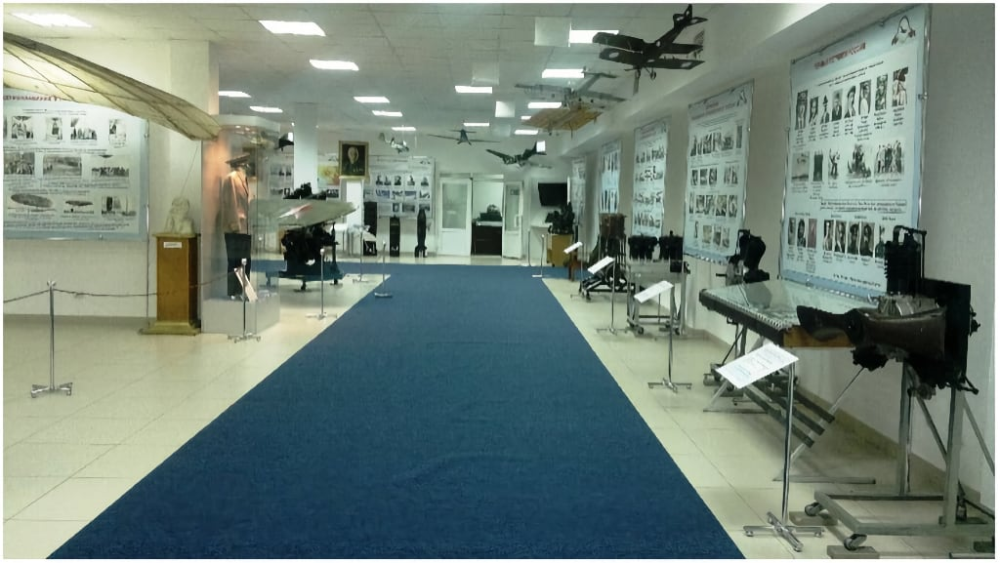
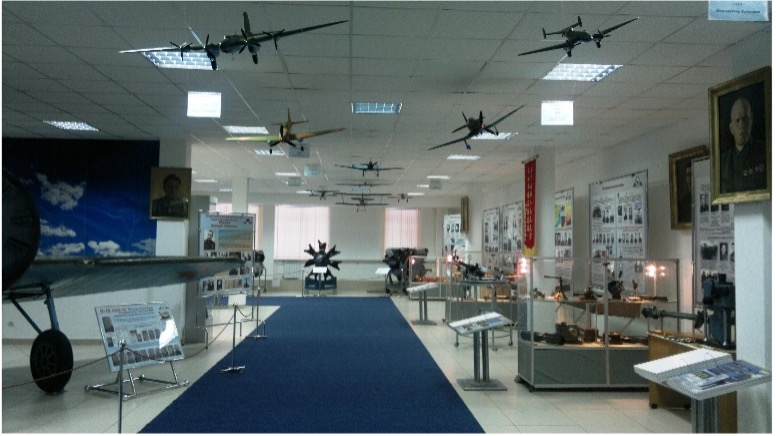
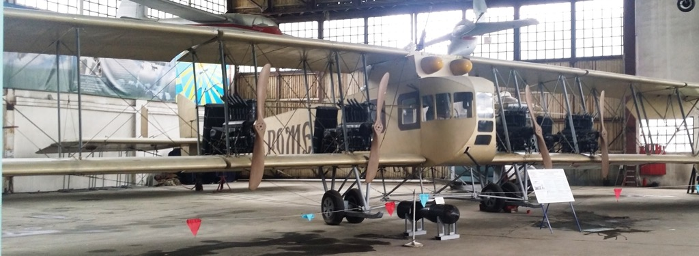
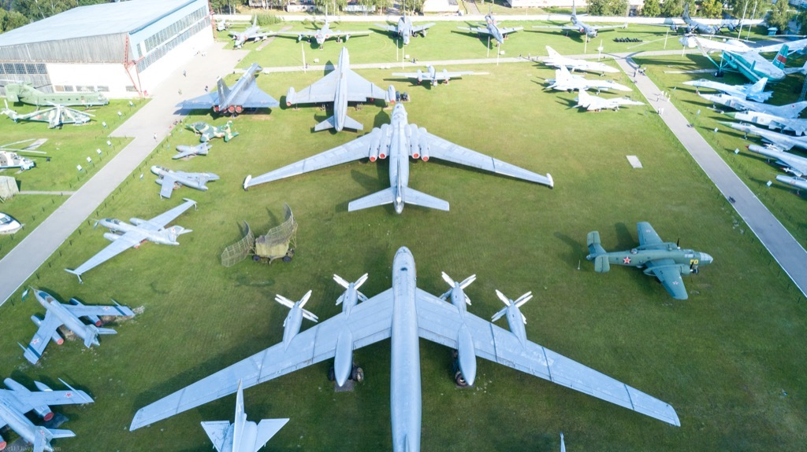

МУЗЕЙ. ЗАЛЫ И АНГАРЫ
10280 кв.метров экспозиций. 2 ангара общей площадью 5200 кв. метров. Открытая площадка площадью 18 гектар
В фондах хранится 34 894 музейных предмета. Подлинные образцы летательных аппаратов различных типов, авиационные двигатели, вооружение, уникальные фото и редкие документы.

Зал 1. Зарождение и развитие авиации в России
Этот зал открывает экспозицию музея. Он посвящён историческим корням отечественного воздухоплавания и авиации, демонстрирует работы отечественных ученых, конструкторов и изобретателей в области создания летательных машин, рассказывает об интересных результатах, которых они добились.

Зал 2. ВВС в годы мирового строительства 1922-1941 г.г.
Экспозиция зала расскажет о первых шагах советской авиации. Здесь представлены экспонаты от момента образования СССР до начала Великой Отечественной войны. Собрана уникальная коллекция авиационных двигателей и моделей самолетов этого периода.

Зал 6А и 6Б. ВВС в годы Великой Отечественной войны
Экспозиция этих залов посвящена авиации Советского Союза в годы Великой Отечественной войны. Вы увидите боевые самолеты, на которых наши лётчики вступили в войну и которые поставляла авиационная промышленность в тяжелое военное время.

Зал-ангар 8. Уникальные летательные аппараты
В зале-ангаре 8 собраны образцы уникальных экспериментальных и исторических самолетов, планеров и других видов авиационной техники. Здесь размещены самолеты, участники Первой мировой и гражданской войн: «Илья Муромец», «Вуазен» и другие.

Экспозиция «Воздушные винты»
История возникновения и развития воздушных винтов. Представленные экспонаты расскажут о первых исследованиях в области аэродинамики воздушного винта, о первых попытках его применения. Здесь вы сможете своими глазами увидеть уникальные экземпляры воздушных винтов применявшихся в авиации на протяжении всего ХХ века.

Открытая стоянка. Современные летательные аппараты
На открытой стоянке расположены летательные аппараты, созданные в ОКБ Туполева, Сухого, Микояна, Яковлева, Антонова, Ильюшина, Мясищева, Миля, Камова. Экспонируются 110 самолетов и вертолетов различных типов и модификаций, которые объединены в группы по разработавшим их конструкторским бюро.

Зал 5. Форма одежды. От пилота-авиатора до космонавта
Кто из нас не восхищался подвигами прославленных летчиков Нестерова, Чкалова, Покрышкина, Кожедуба, Гагарина и многих других, чьи портреты известны каждому россиянину.